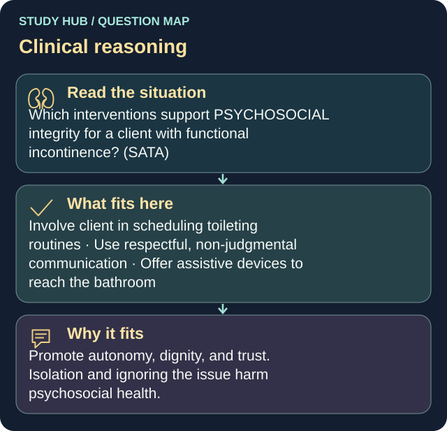

Which interventions support PSYCHOSOCIAL integrity for a client with functional incontinence? (SATA)
Answers
- Involve client in scheduling toileting routines
- Use respectful, non-judgmental communication
- Offer assistive devices to reach the bathroom
Reasoning
Promote autonomy, dignity, and trust.
Clinical detail
Isolation and ignoring the issue harm psychosocial health.
Why the other answers do not fit
- Recommend complete social isolation
- Minimize discussion to avoid discomfort
Shared reasoning for choices without a separate note: Promote autonomy, dignity, and trust. Isolation and ignoring the issue harm psychosocial health.
